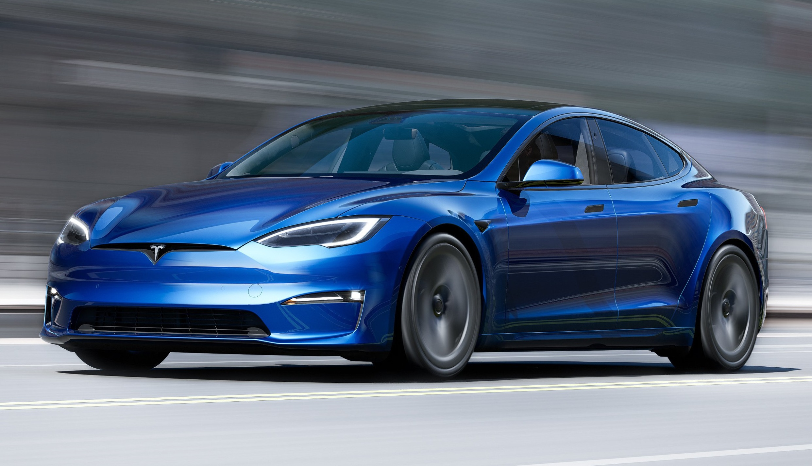
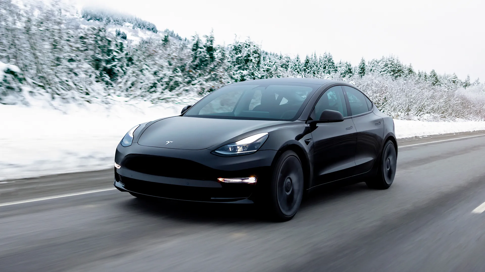

BIENVENIDO A TESLA MEDELLIN
CONCESIONARIO AUTORIZADO Y ESPECIALIZADO EN VENTA DE CARROS TESLA NUEVOS Y USADOS
Somos el concesionario de Tesla más grande de Colombia y uno de los más grandes de Latinoamérica.
Te ofrecemos asesoría y venta de carros nuevos, de la marca más innovadora y prestigiosa del mundo en
carros eléctricos; acá podrás encontrar todos los modelos de TESLA.
Pero si aún quieres más, nuestros USADOS GARANTIZADOS, SELECCIONADOS Y ALISTADOS te ofrecen total
seguridad y garantía.
- Financiación
- Asesoría
- Seguro
- Garantía
Mira nuestros
MODELOS DISPONIBLES
TESLA MODEL S
¿Estás listo para experimentar la velocidad y el lujo en un solo vehículo? El Tesla Model S es el sedán eléctrico de alto rendimiento que estabas buscando. Con una aceleración de 0 a 60 mph en solo 2.5 segundos, este vehículo te dejará sin aliento. ¡Y con su autonomía de hasta 373 millas, no tendrás que preocuparte por la carga en un largo viaje!
TESLA MODEL 3
¿Buscas un vehículo que sea eficiente, práctico y asequible? El Tesla Model 3 es la opción perfecta. Con su autonomía de hasta 310 millas y un rango de carga de hasta 246 millas en un solo cargador, este sedán eléctrico de tamaño mediano es ideal para aquellos que buscan un vehículo que se adapte a su estilo de vida. ¡Y con su precio accesible, no tienes que romper el banco para conducir un Tesla!
TESLA MODEL X

¿Buscas un vehículo que combine estilo, tecnología y sostenibilidad? El Tesla Model X es la opción perfecta. Con su diseño innovador y características avanzadas, este SUV eléctrico de lujo ofrece una experiencia de conducción sin igual. ¡Imagina conducir un vehículo que no solo es ecológico, sino que también te hace sentir como un pionero en la carretera!
TESLA MODEL Y
¿Estás listo para unirte a la revolución de los vehículos eléctricos? El Tesla Model Y es el SUV compacto que estabas buscando. Con su autonomía de hasta 310 millas y un rango de carga de hasta 246 millas en un solo cargador, este vehículo es perfecto para aquellos que buscan un vehículo eficiente y práctico. ¡Y con su diseño innovador, te sentirás como un pionero en la carretera!
TESLA CYBERTRUCK
¿Estás listo para romper las reglas y desafiar la norma? El Tesla Cybertruck es el vehículo más innovador y disruptivo de la carretera. Con su diseño futurista y características avanzadas, este camión eléctrico es el vehículo perfecto para aquellos que buscan algo nuevo y emocionante. ¡Con su autonomía de hasta 500 millas y un rango de carga de hasta 250 millas en un solo cargador, el Cybertruck es el vehículo ideal para aquellos que buscan aventuras y no se conforman con lo ordinario!
Descubre datos interesantes en nuestros
ARTÍCULOS DE INTERÉS
Tesla ofrecerá un modelo de auto eléctrico de bajo costo para enfrentar la fuerte competencia china
En 2025 se lanzará un modelo más económico de Tesla, según declaró a los inversionistas su CEO, Elon Musk. Esto ayudaría al fabricante de vehículos eléctricos a competir con BYD y otras empresas chinas en expansión.
Leer más...¿Cómo se convirtió Tesla en la Empresa Más Innovadora del Mundo?
Desde sus inicios, Tesla se ha caracterizado por su fuerte cultura empresarial centrada en la innovación. Esta cultura está profundamente arraigada a la marca, y la distingue de sus competidores en la industria. Incluso competidores de primer nivel con muchísimos años más en el mercado están teniendo serios problemas en seguir el ritmo de los avances de Tesla.
Leer más...Marketing de Tesla: descubre cómo la marca está revolucionando el mercado automovilístico
Tesla Motors se ha destacado como una de las principales automotrices de coches eléctricos. Para ser cada vez más significativa en el mercado automovilístico, la empresa utiliza diversas estrategias de marketing que hacen toda la diferencia.
Leer más...